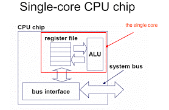
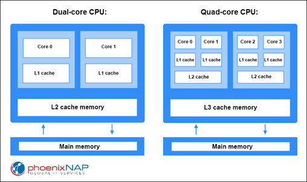

[ CPU (Central Processing Unit) ]
Merupakan bagian terpenting dari sebuah komputer yang bertanggung jawab untuk menjalankan instruksi-instruksi yang diberikan kepada komputer. CPU merupakan otak dari komputer yang bertanggung jawab untuk mengolah data dan menjalankan program-program yang diperintahkan oleh pengguna.
[Komponen CPU]
A. Control Unit
Bagian dari CPU yang bertanggung jawab mengontrol seluruh aktivitas yang terjadi di dalam komputer, seperti membaca instruksi dari memori, mengontrol aliran data, dan mengirimkan sinyal ke perangkat lain di komputer.
B. Arithmetic and logic unit (ALU)
Bagian dari CPU yang bertanggung jawab melakukan operasi aritmatika dan logika sederhana, seperti penambahan, pengurangan, perkalian, dan pembagian (AND, OR, XOR, dan NOT) dalam sistem komputer.
C. Register
Salah satu darisekumpulan kecil tempat penyimpanan data yang merupakan bagian dari prosesor komputer. Register dapat menyimpan instruksi, alamat penyimpanan, atau jenis data apapun (seperti urutan bit atau karakter individual).
D. CPU Interconnection
Sistem koneksi dan bus yang menghubungkan komponen internal CPU, yaitu ALU, unit kontrol dan register-register dan juga dengan bus-bus eksternal CPU yang menghubungkan dengan system lainnya. Seperti memori utama, piranti masukkan/keluaran.
[Tipe Dasar CPU]
a. Single Core CPU
Jenis CPU ini hanya memiliki satu inti dan digunakan pada perangkat yang tidak memerlukan daya pemrosesan tinggi, seperti smartphone dan tablet dasar.

b. Dual-Core CPU
Jenis CPU ini memiliki dua inti dan digunakan pada perangkat yang membutuhkan daya pemrosesan sedang, seperti smartphone dan tablet kelas menengah.
c. Quad Core CPU
Jenis CPU ini memiliki empat inti dan digunakan pada perangkat yang membutuhkan daya pemrosesan tinggi, seperti smartphone dan tablet kelas atas.

d. Octa Core CPU
Jenis CPU ini memiliki delapan inti dan digunakan pada perangkat yang membutuhkan daya pemrosesan sangat tinggi, seperti smartphone dan tablet kelas atas.
e. Hexa Core CPU
Jenis CPU ini memiliki enam inti dan digunakan pada perangkat yang membutuhkan daya pemrosesan tinggi, seperti smartphone dan tablet kelas atas.
f. Deca Core CPU
Jenis CPU ini memiliki sepuluh inti dan digunakan pada perangkat yang membutuhkan daya pemrosesan sangat tinggi, seperti smartphone dan tablet kelas atas.
g. CPU 12 Inti
Jenis CPU ini memiliki dua belas inti dan digunakan pada perangkat yang membutuhkan daya pemrosesan yang sangat tinggi, seperti komputer desktop kelas atas.
[Peran ALU]
A. Operasi Aritmatika
B. Operasi Logika
C. Perbandingan dan Pemrosesan Data
D. Operasi Bitwise
E. Penanganan Overflow dan Carry
[Komponen ALU]
A. Register
B. Pemilih (Multiplexer)
C. Dekoder
D. Rangkaian Aritmatika
E. Rangkaian Logika
F. Pembanding (comparator)
G. Rangkaian penanganan Overflow dan Carry
H. Bus Data
[Operasi Registers]
• Fetch : digunakan untuk mengambil instruksi yang diberikan oleh pengguna. Selain itu, instruksi yang disimpan ke dalam memori utama (main memory) juga akan diambil dengan menggunakan register.
• Decode : Operasi Decode digunakan untuk menafsirkan instruksi. Hal ini bertujuan agar CPU mengetahui operasi mana yang akan dilakukan pada instruksi.
• Execute : Operasi Execute dilakukan oleh CPU. Output yang dihasilkan oleh CPU kemudian disimpan ke dalam memori dan setelah itu ditampilkan di layar pengguna.
[Jenis-Jenis Register]
1) MAR (Memory Address Register)
Register ini menyimpan alamat memori dari data dan instruksi. Register ini digunakan untuk mengakses data dan instruksi dari memoriselama fase eksekusi suatu instruksi.
2) MDR (Memory Data Register)
Adalah Register unit kontrol komputer yang berisi data yang akan disimpan di penyimpanan computer (misalnya RAM), atau data setelah diambil dari penyimpanan komputer. Register ini bertindak seperti buffer dan menyimpan apa pun yang disalin dari memori yang siap digunakan oleh prosesor. MDR menyimpan informasi sebelum masuk ke decoder.
3) MBR (Memory Buffer Register)
Memory Buffer Register digunakan untuk menyimpan informasi dan data yang dapat dibaca atau ditulis dalam memori komputer. Fungsi utama MBR adalah untuk menyimpan berbagai jenisinstruksi komputer dan data yang dapat ditransfer antar memori komputer.
4)PC (Program Counter)
Nama lain dari register Program Counter adalah Instruction Address Register (IAR) atau IC (instruction counter). Program Counter digunakan untuk menunjukkan posisi saat ini dari urutan program dalam sistem komputer. Ketika instruksi diambil dari memori, nilai Program Counter bertambah satu dan menunjuk ke instruksi berikutnya yang perlu dieksekusi oleh prosesor CPU. Program Counter digunakan untuk menyimpan alamat instruksi langsung yang perlu dieksekusi selanjutnya.
5) Accumulator
Merupakan jenis lain dari register CPU yang banyak digunakan untuk menyimpan logika atau hasil sementara.
6) Index Register
Index Register di CPU komputer adalah register prosesor yang digunakan untuk memodifikasi alamat operan selama menjalankan program. Register ini banyak digunakan untuk melakukan operasi array atau vektor.
7) Instruction Register
Merupakan jenis lain dari register CPU yang digunakan untuk menyimpan instruksi yang sedang dieksekusi atau yang akan didekodekan.